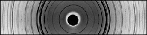

X-ray diffraction analysis is particularly useful in the study of museum objects because it is almost non-destructive. It requires a very small sample, much less than the size of a pin-head, to use the X-ray camera. When X-rays are fired at a crystalline sample placed in the X-ray camera, a proportion are diffracted by the regular crystal structure. These diffracted X-rays produce a pattern of lighter and darker lines on a film. The pattern on the film depends on what is in the sample and by reference to standard data, this pattern can be used as a kind of 'fingerprint' to identify a wide variety of materials. Such materials include corrosion products on metals, pigments used on wall paintings, and inlaid decoration in jewellery.